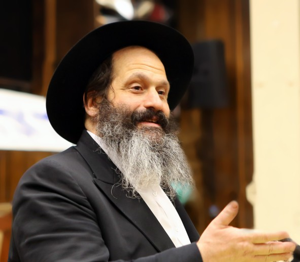

איבד את העסק
הוא איבד את העסק בו השקיע את כל חייו, הפסיד מאות מליוני דולרים, אבל כל זה לא הפריע לו כמו העובדה שהפרשייה גרמה לחילול ה’. רק התשובה הברורה של הרבי הצליחה לעודד את רוחו, למרות שגם הוא לא הצליח להבין כיצד יבוא יום והוא יגרום לקידוש שם שמים גדול ביותר. השבוע הכל הובן >> הרב שלום מרדכי רובשקין, שהשתחרר
הוא איבד את העסק בו השקיע את כל חייו, הפסיד מאות מליוני דולרים, אבל כל זה לא הפריע לו כמו העובדה שהפרשייה גרמה לחילול ה’. רק התשובה הברורה של הרבי הצליחה לעודד את רוחו, למרות שגם הוא לא הצליח להבין כיצד יבוא יום והוא יגרום לקידוש שם שמים גדול ביותר. השבוע הכל הובן >> הרב שלום מרדכי רובשקין, שהשתחרר השבוע בדרך נס, מספר על מה שהחזיק אותו במהלך השנים האחרונות בכלא, חושף לראשונה כי הערעור האחרון האפשרי באפיק המשפטי נדחה רק בשבוע שעבר, ומספר כיצד קיבל את בשורת השחרור המפתיעה, ומהו המסר שהוא מעביר בכל מקום >> מונולוג מרגש

לגבי ה’ טבת, הרבי אומר שהקטרוג שהיה בקשר לספרים הוא רק חיצוני, בעוד שהקטרוג האמיתי היה על הנשיאות של הרבי שראינו. גם בסיפור שלי, בחיצוניות דיברו נגדי כאילו זה היה עניין פרטי שלי, אבל בפועל, זו הייתה מלחמה כנגד השחיטה הכשרה, נגד כל עניין של כשרות.
הפרשייה כולה התחילה כאשר היו גורמים שיצאו נגד השחיטה היהודית. זכורני שבאחד ממוצאי השבתות בימים ההם, אחד מחבריי אמר שצריך לקבל הכרעה מה עושים. הלכתי והשקעתי כמה שעות כדי להבהיר כיצד היא השחיטה היהודית, והראיתי שכל הטענות כנגדנו, אינם אלא שקרים. המאבק שלהם לא היה “הומני” אלא נגד מצוות שחיטה. הייתי צריך להסביר זאת לגויים, להיכנס לראש שלהם, אבל יחד עם זאת, להישאר בעצמי עם הראש היהודי שלי.
מאז, השם שלי ניצב בחזית של כל העניין של שחיטה, ואני הפכתי למטרה שצריך להוריד מסדר היום, ולכן נאבקו בי אישית. ברוך ה’, אינני מתחרט על זה. נכון, איבדתי את העסק שלי והפסדתי הרבה כסף. לפועל, מה שהכי הרבה הפריע לי, זה חילול ה’ העצום שיצא מהפרשה הזאת. כל חיי השתדלתי לפעול כדי לקדש שם שמים, ופתאום יוצא כזה חילול שם שמים.
הרבי הבטיח שאמשיך לעשות קידוש ה’!
בשלב מסוים בו הייתי ממש שבור מכך, אשתי כתבה לרבי על כך שאני שבור ושהכי מפריע לי זה היפך קידוש שם שמים שקרה. היא שמה את המכתב באגרות קודש והתשובה שקיבלה מהרבי היתה ברורה: בעלך עשה קידוש שם שמים לפני כן, וימשיך לעשות קידוש שם שמים גדול.
את חטאי אני מזכיר היום. אמנם האמנתי במה שהרבי ענה, אבל זה היה רק בבחינת ‘מקיף’, כי כל יום צצו כנגדי עלילות אחרות. לא יכולתי לתאר לעצמי איך אקדש שם שמים. אבל מאז השחרור, כל מה שקורה, זה קידוש ה’ עצום. מי יכול לתאר לעצמו את קידוש ה’ הגדול שנעשה כפי שקרה בשבוע האחרון…
רואים בברור שהרבי תמיד אתנו, אלא שצריכים להאמין בזאת; לדעת שכל מה שקורה בעולם, הכל בהשגחה פרטית. ולכן, צריכים להמשיך לעשות מה שהרבי מבקש - להביא משיח עכשיו.
החלטתי: לא אשתנה!
כשנלקחתי לבית הסוהר בפעם השניה, הסוהר הכניס אותי לחדר צדדי והורה לי להחליף את הבגדים. שאלתי: ציצית גם? והוא ענה: בוודאי, הכל. אמרתי: אסור לי. בלי הציצית אינני יכול לזוז אפילו לא ד’ אמות. הסוהר, גוי ענק מגושם, אומר לי בנימת איום: תקשיב לי טוב, החיים שלך השתנו. כאן, החיים משתנים. כששמעתי שהוא רוצה לשנות אותי, החלטתי באותו רגע מתוך החלטה תקיפה שאני לא אשתנה אלא אשאר כפי שאני. אמרתי לו שזה לא אפשרי, שכן זה מצווה ממצוות הדת. הוא התרגז; הוא לא רגיל שמסרבים לו. הוא שלח אותי לתא חשוך ובינתיים הלך לבדוק עם ה’רב’ של הכלא. אחרי כמה דקות חזר אלי ואמר שהראביי אמר “דינא דמלכותא דינא”, ושאקשיב למה שהוא אומר… אמרתי לו: הרבי הריי”צ אמר שרק הגופים שלנו בגלות אבל לא הנשמות. ממילא, בענייני הנשמה אתה לא יכול לעשות לי כלום… הגוי כמובן לא הבין על מה אני מדבר.
השמחה של כולם - התגלות יחידה שבנפש
בפועל לא השתניתי, כי ‘יחידה שבנפש’ לא יכולה להשתנות.
מה שקורה היום, שיהודים מתאחדים. איך אפשר להתאחד באופן שכזה?
הגעתי להורים שלי לכבוד שבת קודש. הייתי אמנם רוצה להיות בשבת ב770, אבל הורי מבוגרים והייתי צריך להיות אצלם. איפה שהלכתי, ראיתי את השמחה של כולם. בדרך לבית כנסת ניגשו אלי ואמרו מזל טוב, וכו’. יהודים מכל הסוגים: חסידים, ליטאים. הבית מלא כל הלילה וכל היום.
אנשים אומרים שהשחרור שלי מחזק להם את האמונה והביטחון. מאיפה זה מגיע? מה’יחידה שבנפש’. יהודים התאחדו מעצמם, ועל כן צריכים לשמור את האחדות הזאת, ולומר ביחד לקב”ה שצריכים ‘משיח נאו’. מהגאולה הפרטית נגיע לגאולה הכללית.
אני בטוח שהרבי שמח ממה שקורה כאן בימים אלה, וזו הדרך להביא את המשיח - להכיר שאין עוד מלבדו.
כמו כמו יהודי, מחשבות של גאולה
הדרך שבה יכולתי להתמודד בבית סוהר הייתה המחשבה שאני לא שם. אם אתה מסכים למקום הזה שבו אתה נמצא - אתה שם…
[כדוגמה לכך, סיפר ר’ שלום מרדכי למספר חסידי פולין שהגיעו לבקרו בשבת בבית הוריו בשכונת בורו–פארק: “במוצאי שבת סליחות, כאשר הגיע הזמן לומר סליחות, הייתי לבד בתא. למותר לתאר את האווירה ששררה במקום; רציתי להרגיש קצת את האווירה של סליחות. הרבי הרי”צ מתאר בשיחותיו את כוח הציור, באמרו שבכוחו של אדם לצייר בכוח המחשבה מצב מסוים מתוך עמקות עד שמרגישים כאילו נמצאים בתוכו ממש. וזה מה שעשיתי: התעמקתי מאד במחשבותיי, וציירתי לעצמי איך אני נכנס ל–770 ונסחף במעגלים של אלפי חסידים שרוקדים את השיר ‘כתיבה וחתימה טובה’. התבוננתי בזה עד שהרגשתי שאני אכן נמצא שם, ורק אז התחלתי לומר ‘סליחות’. - א.ר.].
בכל מצב השתדלתי לחשוב כמו יהודי; איך יהודי מסתכל על כזה ניסיון?
לאחר שכל הסיכויים בדרך הטבע הסתיימו - הגיע הנס הגדול.
הרבי מלמד אותנו שצריך ביטחון, זה הדבר האמיתי. הביטחון לא סותר את העובדה שלקחנו עורכי דין, כי התורה מצווה לעשות פעולות בדרך הטבע, אבל העניין האמיתי היה לחזק את הביטחון בקב”ה. אני יכול לספר שכל שיחה שלי עם העו”ד, התחילה ברעיון משיחה של הרבי ופרק תהילים, ורק אחרי זה עברנו לדבר על העניין עצמו.
הקב”ה רצה להראות שהכל ממנו יתברך. בכל פעם שהגשנו בקשות, קיבלנו תשובות שליליות שוב ושוב. סירוב אחרי סירוב. עורך הדין המוכשר, שבאמת צריך לומר לו תודה רבה על השעות הרבות שהקדיש לזה וללא תשלום, עבד קשה להכין ניירות כשבכל פעם הוא בטוח מחדש שהפעם זה יילך. אבל זה לא הצליח….
כעת אני יכול לספר, ששבוע לפני השחרור הניסי - קיבלתי תשובה שלילית על הערעור האחרון שהיה אפשר להגיש באפיק המשפטי. וראה זה פלא, רק לאחר שכל הנסיונות בדרך הטבע - כשלו, רק אז הגיעה הישועה. רק אחרי שכולם התייאשו מהדרכים הטבעיות - הקב”ה הראה את כוחו והוציא אותי למעלה מהטבע. זה מה שהקב”ה רצה להמחיש לנו באופן הברור ביותר, שהגאולה אינה מלובשת כלל בדרכי הטבע, אלא היא באה ממנו.
לפני שנכנסתי, הייתי נותן כל כסף שבעולם שלא להיכנס לכלא. כעת אני מבין אפילו עוד יותר טוב עד כמה המקום הזה גרוע. אפילו לא ליום אחד. אבל לאחר שהייתי שם - אינני מוכר את הזכות הזאת בעד כל הון שבעולם. אחרי שישבת בכלא, אתה לא הולך לוותר על זה.
את הדברים הללו אמר הרבי הריי”צ לאחר מאסרו, ואני מרגיש זאת במוחש.
עובר זמן והקב”ה אומר: אתם חושבים שאתם מנהלים את ההצגה? בואו ואני אראה לכם איך הוא יוצא הביתה. ובאתי הביתה.
עלינו להפסיק לחשוב כמו גוי ולהתחיל לחשוב כמו יהודים. וכשיהודי עושה משהו, הוא צריך לחשוב איך יהודי פועל במצב כזה.
טעימה מביאת המשיח
ברוך השם, ה’ נתן כוח להחזיק באמונה והגענו לגאולה. אחרת לא הייתי יכול להשיג זאת. וכמו שאני הגעתי לזה, אני מאחל שנגיע כולנו לגאולה הכללית ושלכולנו יהיה ‘דידן נצח’ הסופי והכללי.
בבורו פארק באו אלי אנשים ואמרו לי: כל השמחה שאנחנו רואים כאן, זה רק טעימה ממה שיהיה כאשר מלך המשיח יבוא.
אנחנו צריכים להיות מוכנים, כי הקב”ה בוודאי מוכן, והרבי בוודאי גם הוא מוכן, אז בואו ונצא מהגלות!